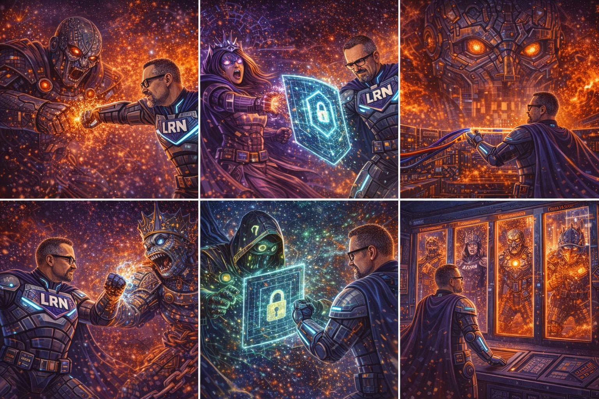

The Ransomware Queen watches her infection map. Blue spots appearing — systems being recovered.
Her expression shifts from satisfaction to cold anger.

CRYPTOLOCKER LIEUTENANT ATTACKS · RANSOMWARE QUEEN CONFRONTATION · DATA HOSTAGE CAPTURED · CONTAINMENT
RANSOMWARE QUEEN:
"Someone is deploying immutable backups. Someone is fighting back.
Find their backup infrastructure. Encrypt it. Destroy it. Leave them NOTHING to recover."
THOOM. THOOM. THOOM.
CRYPTOLOCKER LIEUTENANT:
"I can't… the backups won't encrypt! They reject my payload!"
BRZZZZT! DENIED! BRZZZZT! DENIED!
Fast, secure, open-source backup program. Uses content-addressable storage with strong encryption and deduplication.
Supports multiple backend storage targets (cloud, SFTP, local). Every backup is encrypted and verified at rest.
Deduplicating backup with compression and authenticated encryption. Supports append-only mode that prevents
backup deletion — even compromised credentials cannot delete existing backup archives. Critical for ransomware protection.
Encrypted bandwidth-efficient backup using GnuPG encryption. Produces encrypted tar-format volumes that can be stored
on any remote server. Air-gap compatible — even if attackers access the backup storage, they can't read or modify the data.
LRN MAN:
"Append-only mode. You can add new backups but never delete or modify existing ones.
Even with full admin credentials, these backups are untouchable."
LRN MAN:
"These backup volumes are encrypted with keys the Ransomware Queen doesn't have, stored on drives
that aren't connected to any network. She can't encrypt what she can't reach. She can't read what she can't decrypt."